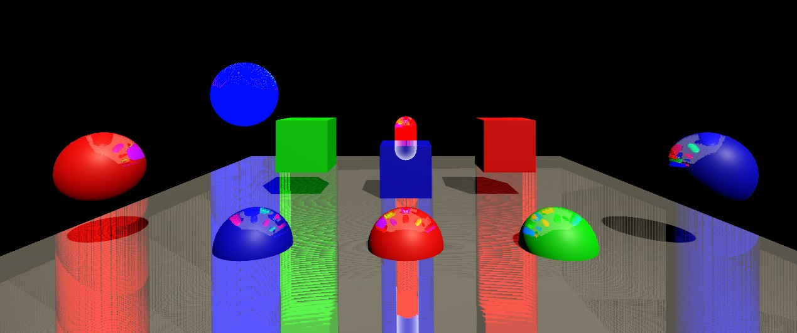

ShaderToys
Table of Contents
ShaderToys note.
<!– more –>
MyEffect
01OcclusionHighlight
02ScanEffect

03SSR
获得深度值和 Normal
// common 得到viewRay v2f vert(appdata v) { // ...... float4 ndcFarPlanePos = float4(o.uv * 2.0 - 1.0, 1.0, 1.0); float4 viewDir = mul(unity_CameraInvProjection, ndcFarPlanePos); o.viewRay = viewDir.xyz / viewDir.w; } float4 frag(v2f i) { // forward path float linear01Depth; half3 viewSpaceNormal; DecodeDepthNormal(tex2D(_CameraDepthNormalsTexture, uv), linear01Depth, viewSpaceNormal); // deferred path float decodedDepth = Linear01Depth(tex2D(_CameraDepthTexture, i.uv).r); float3 viewSpaceObjPos = decodedDepth * i.viewRay; float3 worldSpaceNormal = tex2D(_CameraGBufferTexture2, i.uv).rgb * 2.0 - 1.0; float3 viewSpaceNormal = normalize(mul((float3x3)_WorldToView, worldSpaceNormal)); }
拖影问题

导致上面问题的原因如下图所示：

./ShaderToys/ssr_multi_shadow_01.ggb
得到每个像素点对应物体的厚度，可以精确避免上面问题。通过下面代码定义了一个参考的厚度_DepthThickness，可以一定程度上消除上面问题；
bool CheckDepthCollision(float3 viewPos, out float2 screenPos) { float4 clipPos = mul(UNITY_MATRIX_P, float4(viewPos, 1.0)); clipPos = clipPos / clipPos.w; screenPos = float2(clipPos.x, clipPos.y) * 0.5 + 0.5; float eyeZ = GetEyeZ(screenPos); return screenPos.x > 0 && screenPos.y > 0 && screenPos.x < 1.0 && screenPos.y < 1.0 && eyeZ < -viewPos.z && // eyeZ < 当前检测的深度 (说明检测点在当前像素之后) eyeZ + _DepthThickness > -viewPos.z; // eyeZ + 物体厚度 > 当前检测的深度 (说明 eyeZ+_DepthThcikness 对应的点在当前检测点之前) }
二分搜索优化
RayMarching 找到的点对应的深度超过 _CameraDepthTex 中记录深度后，将 currentPos 退回到上一步位置，并且将 currentRayMarchingStep 减半，再次 RayMarching。
TODO 屏幕空间光栅化 RayMarching
参考资料
- Unity 反射效果 https://blog.csdn.net/puppet_master/article/details/80808486
- SSR in Unity5 en http://www.kode80.com/blog/2015/03/11/screen-space-reflections-in-unity-5/
- SSR in Unity5 cn https://blog.csdn.net/hehemingsgc6/article/details/53888902
- Screen Space Ray Tracing http://casual-effects.blogspot.com/2014/08/screen-space-ray-tracing.html
- https://github.com/dreamfairy/Unity_SSR_SSPR
04PlanarReflection
原理
- 将视角摄像机相对于反射平面进行镜像，使用镜像后的反射摄像机对场景进行渲染，将结果写入 ReflectionRT 中。
- 使用视角摄像机对反射平面进行渲染。反射平面投影到视角摄像机屏幕空间后的区域与反射平面投影到反射摄像机屏幕空间后的区域相同，因此，视角摄像机渲染反射屏幕时，反射屏幕对 ReflectionRT 的采样 uv 使用屏幕坐标。

Error 平面下物体异常反射
通过修改反射摄像机的近裁剪平面，裁剪掉平面下物体就可以避免该问题。具体原理参考下面文章。
05SSPR
参考资料
- http://remi-genin.fr/blog/screen-space-plane-indexed-reflection-in-ghost-recon-wildlands/
- https://github.com/ColinLeung-NiloCat/UnityURP-MobileScreenSpacePlanarReflection
- Unity URP 移动平台的屏幕空间平面反射（SSPR）趟坑记 https://zhuanlan.zhihu.com/p/150890059
- URP 屏幕空间平面反射（ScreenSpacePlanarReflection）学习笔记 https://zhuanlan.zhihu.com/p/367496408
06NoiseBall
- 利用ComputeShader 生成三角形三个顶点的位置和法线数据，将数据分布存入position ComputeBuffer和 normal ComputeBuffer中。
- 使用Graphics.DrawMeshInstancedIndirect 以Instanced方式绘制三角形
Graphics.DrawMeshInstancedIndirect 方法的bufferWithArgs参数必须包含5个整数，它们分别表示：
(1) 每个实例的索引数量
(2) 实例数量
(3) 起始的索引地址
(4) 起始的顶点地址
(5) 起始的实例地址
下面为NoiseBall中bufferWithArgs填充的数据：
_drawArgsBuffer.SetData(new uint[5] { 3, (uint)TriangleCount, 0, 0, 0 });
TODO
Rain On Camera
- Unity RainyWindow https://zhuanlan.zhihu.com/p/141902090
- Unity Shader 之萧萧暗雨打窗声 https://zhuanlan.zhihu.com/p/77704760
- Unity-Raindrops https://github.com/ya7gisa0/Unity-Raindrops
- https://github.com/ya7gisa0